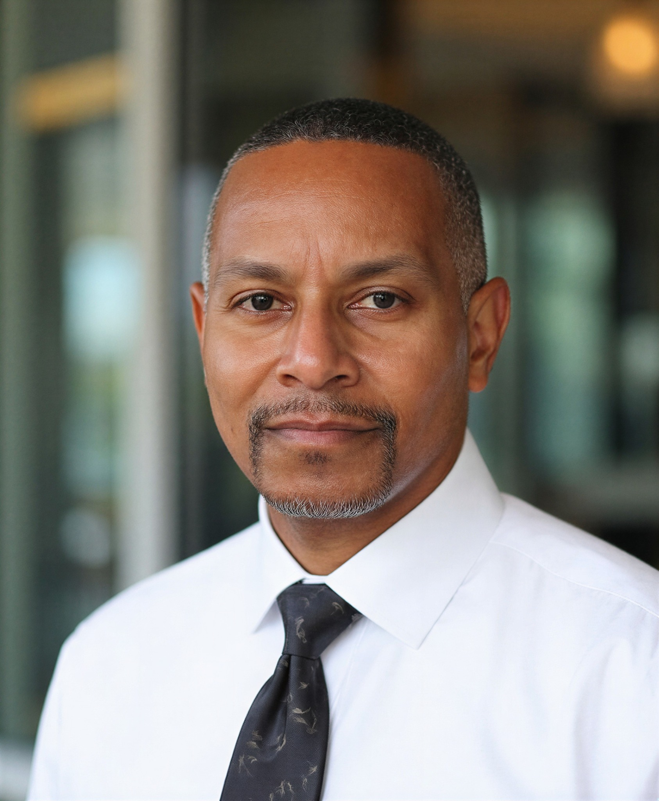

The Finley Robotics Initiative was founded by Dr. Reginald "Reg" Finley, an educator and learning consultant with more than three decades of experience in technology, science education and community outreach. Dr. Finley has served in the U.S. Army, worked in federal corrections, launched a nationally syndicated science‑focused media program and taught STEM subjects at the middle, high school and college levels. He currently works as a learning consultant with Siemens while teaching scientific literacy, statistics and anatomy and physiology as a university instructor.
Dr. Finley is passionate about removing barriers to STEM education. His career has spanned technical support, museum leadership and public school teaching. Through this initiative he seeks to level the playing field for students who lack access to robotics programs. An ethical vegan and advocate for critical thinking, he believes technology should empower all communities.
The Finley Robotics Initiative embodies these values by pairing cutting‑edge tools with mentorship. We understand that lasting change requires more than hardware—it depends on curiosity, persistence and support. We are committed to fostering those qualities in our scholars.